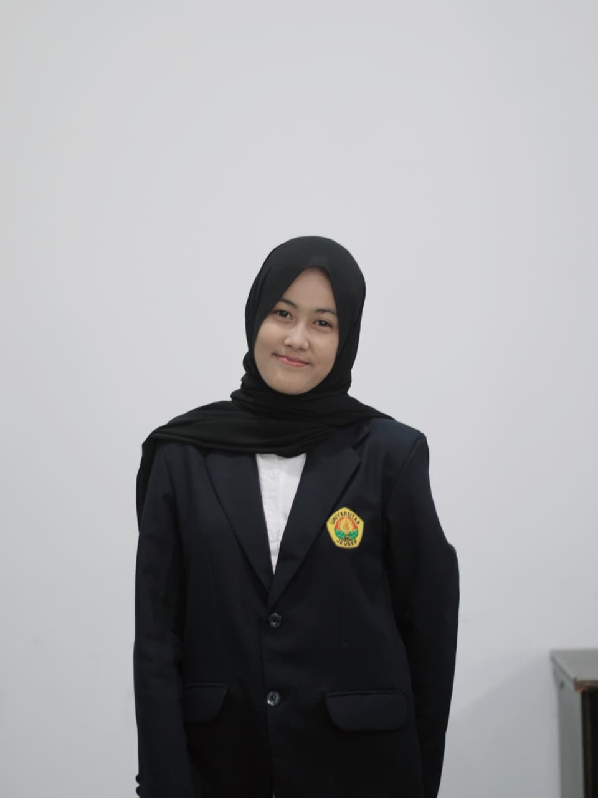
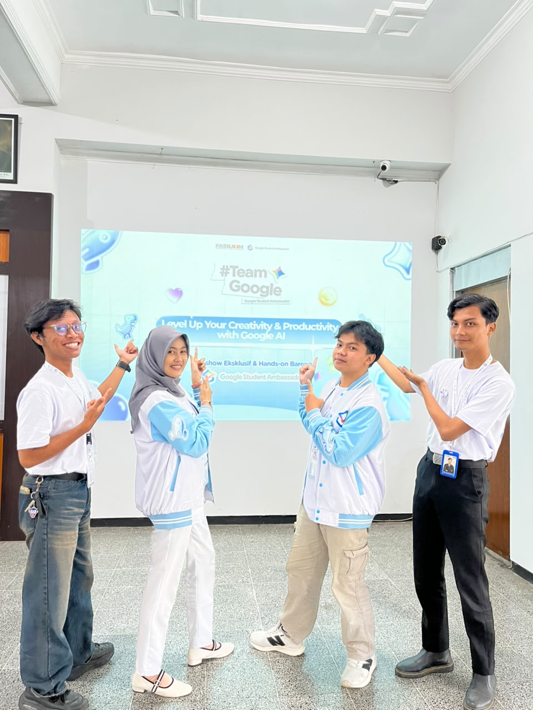
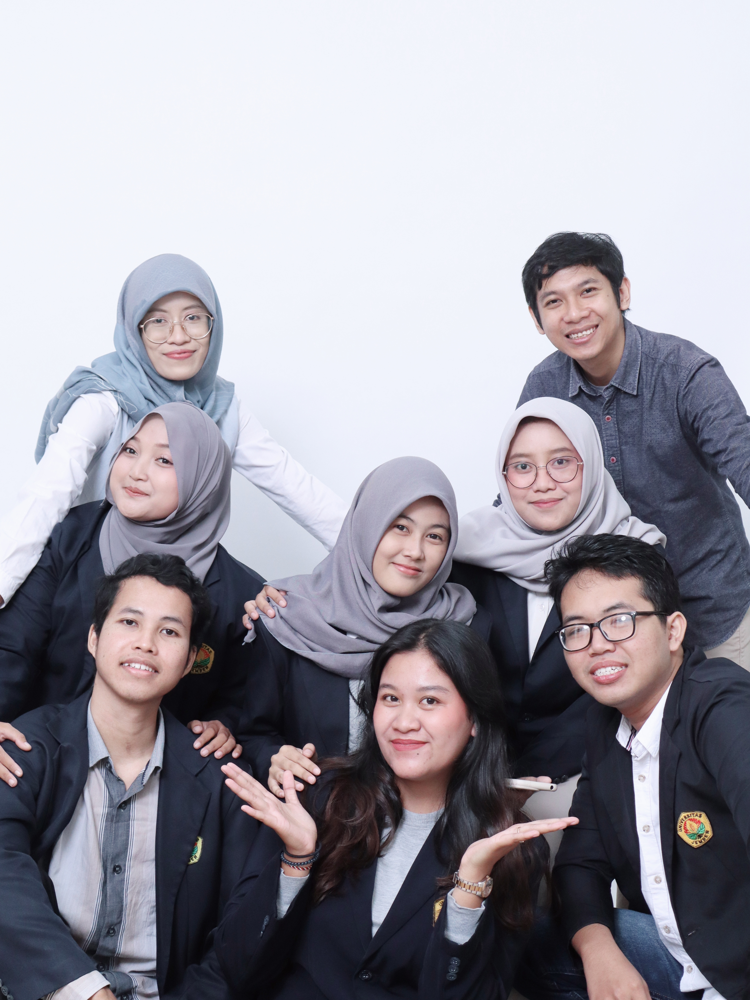
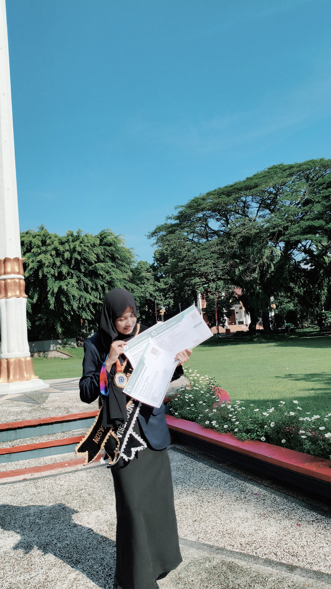
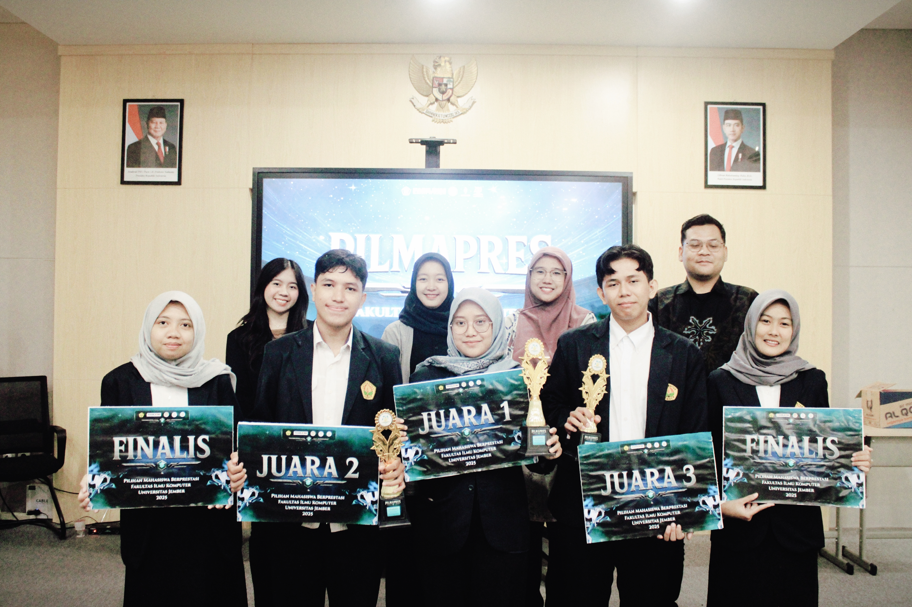
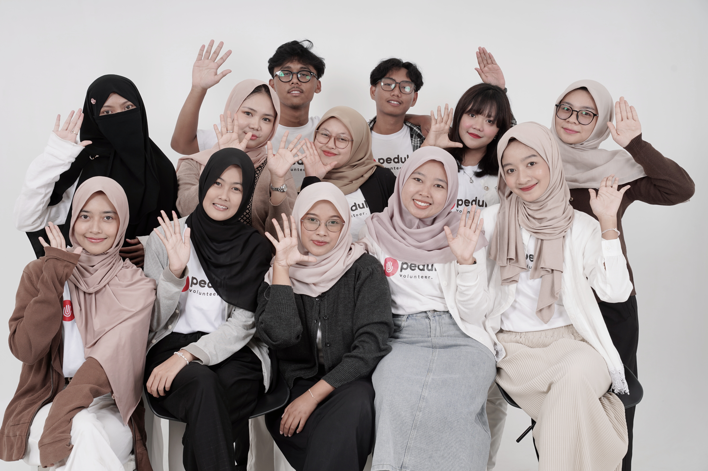
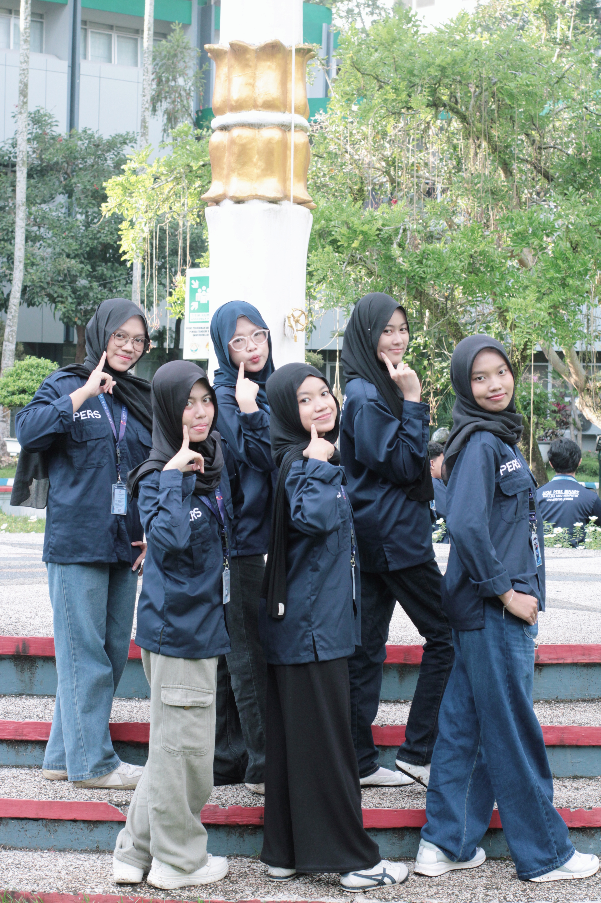
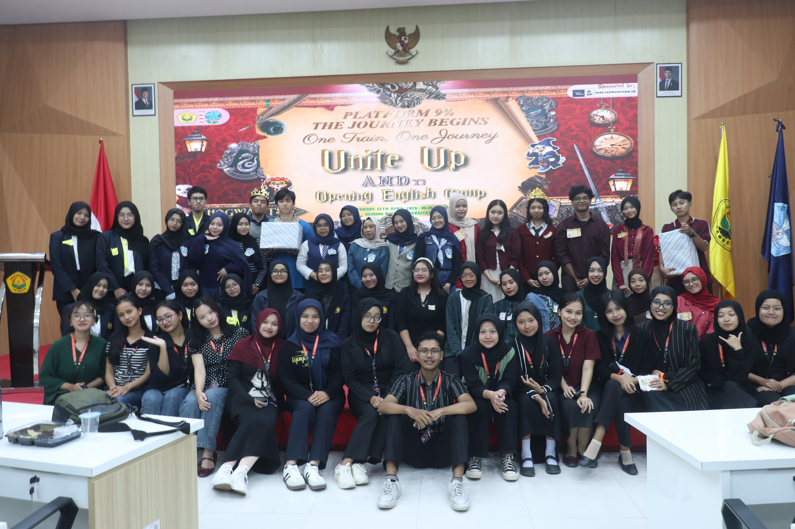
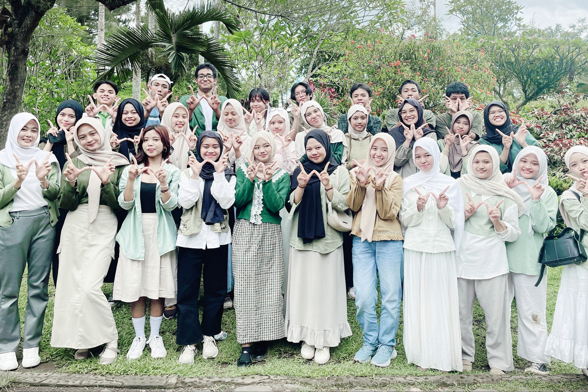

𝖬𝖺𝗁𝖺𝗌𝗂𝗌𝗐𝗂 𝖲1 𝖨𝗇𝖿𝗈𝗋𝗆𝖺𝗍𝗂𝗄𝖺 𝖥𝖺𝗄𝗎𝗅𝗍𝖺𝗌 𝖨𝗅𝗆𝗎 𝖪𝗈𝗆𝗉𝗎𝗍𝖾𝗋 𝖴𝗇𝗂𝗏𝖾𝗋𝗌𝗂𝗍𝖺𝗌 𝖩𝖾𝗆𝖻𝖾𝗋 𝖺𝗄𝗍𝗂𝖿 𝖽𝖺𝗅𝖺𝗆 𝖱𝗂𝗌𝖾𝗍 𝖯𝖾𝗇𝖾𝗅𝗂𝗍𝗂𝖺𝗇, 𝖪𝖾𝗆𝖺𝗌𝗒𝖺𝗋𝖺𝗄𝖺𝗍𝖺𝗇, 𝗌𝖾𝗋𝗍𝖺 𝖪𝖾𝗀𝗂𝖺𝗍𝖺𝗇 𝖪𝖾𝗉𝖺𝗇𝗂𝗍𝗂𝖺𝖺𝗇 𝖽𝖺𝗇 𝖯𝗎𝖻𝗅𝗂𝖼 𝖲𝗉𝖾𝖺𝗄𝗂𝗇𝗀.


Awarded Certificate of Participation sebagai Google Student Ambassador Angkatan 1 Periode 2026 dari puluhan ribu mahasiswa se-Indonesia.

Turut mengimplementasikan program transformasi digital sistem absensi geospasial serta edukasi kosmetik dan gizi di SMKN 3 Jember.

Mendapatkan Certificate of Achievement Duta Of The Period Juli 2025 dan Duta Best Innovation of the Seasons 2025 oleh Youth Idea Community.

Terpilih sebagai salah satu finalis Mahasiswa Berprestasi di Fakultas Ilmu Komputer, Universitas Jember (2025).

Merancang alur program sosial kemanusiaan, kerelawanan panti, serta menjadi penanggung jawab kegiatan (Batch 9 & 10).

Aktif dalam organisasi bahasa University Student English Forum (USEF) serta unit kegiatan mahasiswa penelitian komputasi Binary.

Aktif dalam organisasi bahasa University Student English Forum (USEF) serta unit kegiatan mahasiswa penelitian komputasi Binary.

AIESEC Future Leader adalah kegiatan mahasiswa yang di rancang untuk mengembangkan kepemimpinan dan keterampilan